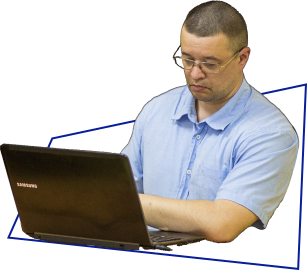
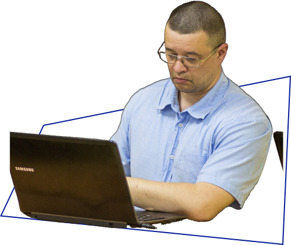

Тюренков Олексій
Валерійович
Валерійович
Людина-Легенда
Вінницької ІТ-Академії
Вінницької ІТ-Академії
"Прийшов певний час, коли я зрозумів, що хочу розвивати і
давати свої знання іншим. Тому, що крім можливості навчати
когось, це також відмінна можливість розвивати себе. Так я і
потрапив у Вінницьку ІТ-Академію. Навіть не знаю хто кого
знайшов, чи ІТ-Академія мене, чи я її.”

Спогади